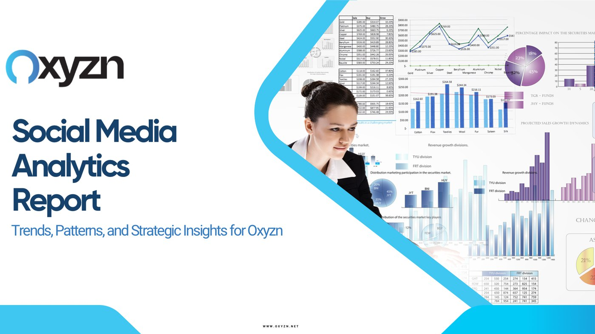
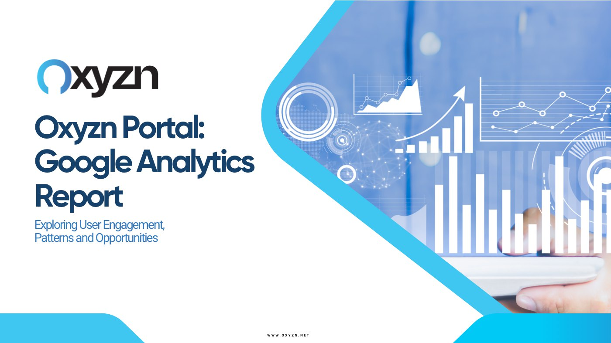

Next project
UK Housing Market & Intelligence

Twelve Months of Channel Data in Python · Oxyzn Internship
Oxyzn had twelve months of LinkedIn, Meta and Google Analytics data and a content programme running on instinct. I exported the raw platform data, analysed it in Python, and turned it into two reports: one on social performance and audience, one on the web portal.
The headline finding was an audience mismatch. The followers the company had built were mostly HR people. The people actually visiting the page were mostly Business Development and Marketing. Those are two different buyers, and the content was written for only one of them.
This work was completed during a marketing and data internship at Oxyzn between March and June 2024. Figures on this page are calculated from the company's own LinkedIn and Google Analytics exports for April 2023 to April 2024.
Twelve months, four channels, three separate exports that did not agree with each other.
The LinkedIn exports arrive as three separate workbooks with different shapes: daily content metrics, a row per post, and follower and visitor breakdowns split across six sheets each. Dates came through as text in inconsistent formats, and several columns were empty because the account had never run sponsored posts.
The first real work was making the three sources line up on a single timeline in pandas so that content activity, follower growth and page visits could be read against each other rather than one at a time.
Who follows you and who visits you turned out to be different people.
| Job function | Followers | Page visitors |
|---|---|---|
| Human Resources | 393 | 561 |
| Business Development | 192 | 1,006 |
| Marketing | 120 | 945 |
Human Resources was the largest follower group by a wide margin, which matched how the content was written. But when I profiled page visitors rather than followers, Business Development and Marketing were ahead of HR, and by a factor of five and eight on their own follower counts.
That gap is the useful part. Followers reflect who was reached in the past. Visitors reflect who is investigating the company now. A content programme aimed only at HR was speaking past two of the three groups actually showing up.
Time series for behaviour, distribution analysis for audience.

The notebook runs two kinds of analysis. Time series over the twelve months for impressions, comments, engagement rate, follower growth and page views, to find when attention moved and whether posting activity explained it. Then distribution analysis across location, job function, seniority, industry and company size, for followers and visitors separately, which is where the mismatch surfaced.
Engagement rate needed care. The mean across posts looks strong, but the distribution is skewed by low-impression posts where a single reaction produces a large percentage. Reading the histogram rather than the average was the difference between an encouraging number and an honest one.
Seniority, geography and company size, from the follower and visitor breakdowns.
| Dimension | Finding |
|---|---|
| Seniority | Senior was the largest group among both followers and visitors |
| Geography | London area accounted for 516 followers, well ahead of any other location |
| Company size | Concentrated in 11 to 200 employees, with a second cluster at 1,001 to 5,000 |
| Industry | Followers skewed to IT and consulting; visitors skewed to advertising and software |
The company size split mattered commercially. A product sold into small companies and a product sold into enterprises need different proof, different pricing conversations and different content. The data showed both audiences present, which is a positioning decision, not a posting-schedule decision.
The first time an analysis of mine changed what somebody wrote.
This was an internship project, and it was the first piece of work where I saw analysis land as a decision rather than a document. The audience finding was not complicated. It came from putting two breakdowns side by side that the platform shows on separate screens, which is precisely why nobody had noticed it.
It set the pattern for how I have worked since: the value is rarely in the individual metric. It is in the comparison nobody made because the tool did not put the two numbers on the same page.